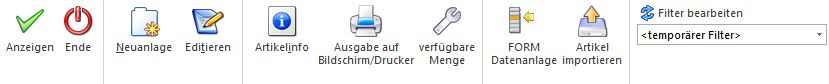
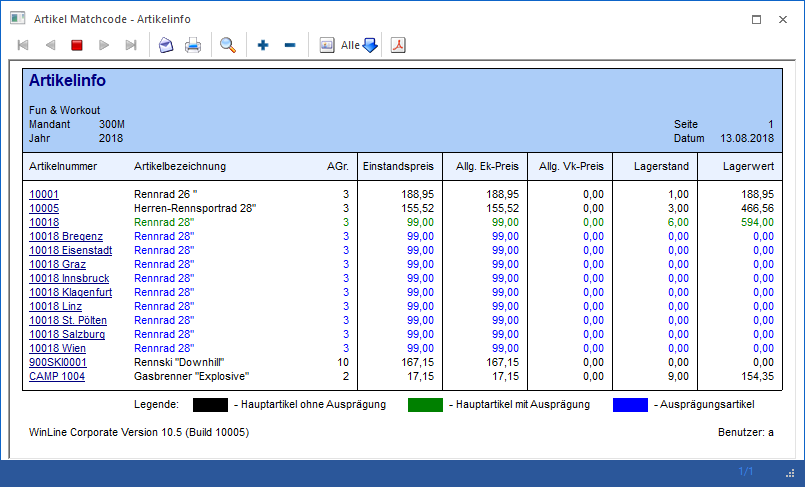

Wenn der Fokus in dem Feld "Artikelnummer" liegt und das Lupen-Symbol bzw. die Taste F9 gedrückt wird, dann öffnet sich das Programm "Artikel Matchcode". An dieser Stelle kann gezielt nach Artikeln gesucht werden.
Hinweis
Wenn in dem Feld "Artikelnummer" ein Teil der gesuchten Nummer oder Bezeichnung eingetragen wurde und die Taste F9 gedrückt wird, dann wird diese Eingabe als Suchbegriff übernommen und die Suche direkt (Ausnahme Register "K/L - Artikelmatch") gestartet.

Grundsätzlich unterteilt sich der Matchcode in die folgenden Register, wobei der Matchcode immer in dem zuletzt verwendeten Register aufgerufen wird:
ü Register "Artikelmatch"
In diesem
Register kann durch Eingabe eines Suchbegriffs innerhalb der Artikelnummer und
der Artikelbezeichnung gesucht werden.
ü Register "Erweiterter
Artikelmatchcode"
In diesem Register kann aufgrund einer zuvor angelegten
Suchstrategie nach Artikeln gesucht werden. Die Spalten in der
Suchergebnistabelle werden dabei ebenfalls über die Suchstrategie definiert.
Hinweis
Die unterschiedlichen Suchstrategien werden in dem Programm "Vorlagen Anlage - Suchstrategien" (WinLine START - Vorlagen - Vorlagen Anlage - Suchstrategien - Stammdaten Artikel) definiert.
ü Register "K/L - Artikelmatch"
In
diesem Register kann neben der Artikelnummer und der Artikelbezeichnung auch in
der Kunden- bzw. Lieferantenartikelnummer und der Kunden- bzw.
Lieferantenartikelbezeichnung gesucht werden.
ü Register "Alternative
Artikelnummern"
In diesem Register kann durch die Eingabe eines
Suchbegriffs innerhalb der Artikelnummer, der Artikelbezeichnung, dem Langtext 1
bzw. 2, dem EAN-Code und der Alternativen Artikelnummer 1 bzw. 2 gesucht
werden.
Hinweis
Diese Suchvariante muss zunächst über die FAKT-Parameter (WinLine START - Parameter - Applikations-Parameter - FAKT-Parameter - Artikel - Erweiterte Optionen) aktiviert werden.
ü Register "Optionen"
In diesem
Register können benutzerspezifischen Einstellungen für die Autovervollständigung
und die Artikelinfo-Anzeige (Button "Info") definiert werden.
Buttons

Ø Anzeigen
Durch Anwahl des Buttons "Anzeigen" bzw. der Taste F5 wird die Artikelsuche gestartet.
Hinweis
Durch Bestätigung der Eingabe im Feld "Suchbegriff" wird die Artikelsuche ebenfalls gestartet.
Ø Ende
Durch Anwahl des Buttons "Ende" bzw. der Taste ESC wird der Programmbereich geschlossen.
Ø Neuanlage
Durch Anklicken des Buttons "Neuanlage" gelangt man direkt in den Programmbereich "Artikelstammdaten", wo neue Artikel angelegt werden können.
Ø Editieren
Durch Anklicken des Buttons "Editieren" kann der markierte Artikel direkt in den Stammdaten editiert werden.
Ø Artikelinfo
Durch Anklicken des Buttons "Artikelinfo" wird die Auswertung "Artikelinfo" erstellt. Diese Liste beinhaltet alle Artikel aus dem aktuell dargestellten Suchergebnis.
Hinweis
Die Liste dient nicht nur als Auswertung, sondern auch als erweiterte Matchcodeauswahl. D.h. wenn ein Artikel aus der Liste angewählt wird, dann wird diese Artikelnummer in dem entsprechenden Artikelnummernfeld eingetragen und der Matchcode geschlossen.
Beispiel
Es wird nach allen Artikeln gesucht, welche das Wort "Renn" beinhalten. Die Anzeige in der Artikelinfo könnte wie folgt aussehen:

Ø Ausgabe auf Bildschirm/Drucker
Durch Aktivierung des Buttons "Ausgabe auf Bildschirm/Drucker" wird die Auswertung "Artikelinfo" (siehe Button "Artikelinfo") auf den Drucker ausgegeben.
Ø verfügbare Menge
Durch Aktivieren des Buttons "verfügbare Menge" wird anhand aller bestehenden Dispositionszeilen (u.a. Kunden- und Lieferantenbestellungen) die verfügbare Menge jedes Artikels errechnet und in der Auswertung "Artikelinfo" (siehe Button "Artikelinfo") dargestellt.
Hinweis
Bei Hauptartikeln mit Ausprägungen werden die Dispositionszeilen der Ausprägungen bei dem Hauptartikel nur dann berücksichtigt, wenn in der "Artikelbedarfsvorschau" die Option "Ausprägungen" auf "1 - anzeigen" gestellt wurde.
Achtung
Wird die Option "verfügbare Menge" aktiviert, dann kann der Aufbau der Liste, abhängig von der Datenmenge, mehr Zeit in Anspruch nehmen.
Ø FORM Datenanlage
Die "FORM Datenanlage" bietet die Möglichkeit Datensätze in der WinLine vorzuhalten und bei Bedarf in die WinLine Stammdaten zu übernehmen (nähere Informationen entnehmen Sie bitte dem Kapitel "FORM Datenanlage").
Ø Artikel importieren
Mit Hilfe dieses Buttons können Artikel schnell und effizient aus externen Quellen übernommen werden (weitere Informationen entnehmen Sie bitte dem Kapitel "Stammdaten importieren").
Ø Filter bearbeiten
Durch Anklicken des Buttons "Filter bearbeiten" kann die Artikelsuche nach frei definierbaren Kriterien eingeschränkt werden.